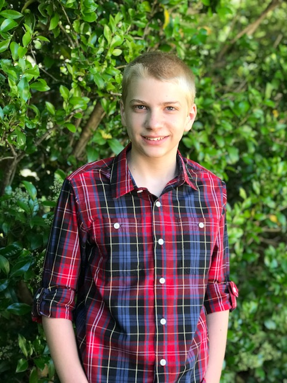
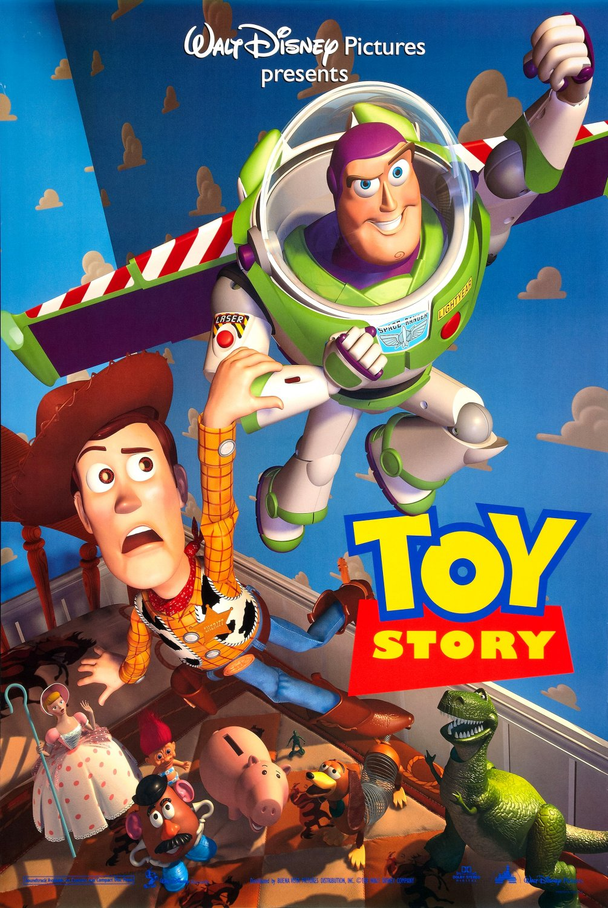
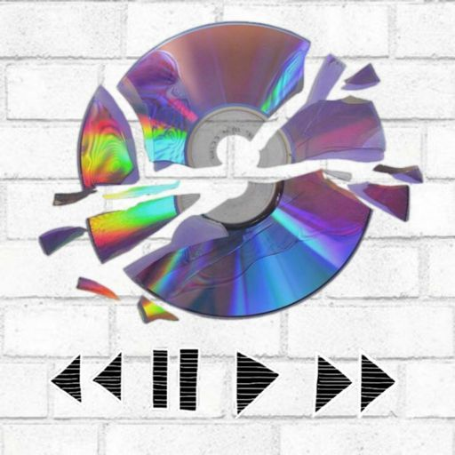

Mes Souvenirs

Bonjour, je m'appelle Kameron Bennett
Bienvenue dans ma présentation!
Diapositive 2: Mon premier animal
Mon premier animal de compagnie était un chat nommé Crunchy. Il était très mignon.
Diapositive 3: Mon apparence
J'avais les cheveux blonds, courts, et les yeux bleus.
Je ne portais pas de lunettes.
Quand j'étais jeune, j'étais petit mais dynamique.
Diapositive 4: Mes émotions
J'étais quelqu'un de joyeux et curieux.
J'aimais explorer et découvrir de nouvelles choses.
Diapositive 5: Mes vêtements préférés
J'aimais porter des t-shirts colorés et des jeans.
Les vêtements confortables étaient mes préférés.
Diapositive 6: Qu'est-ce que j'aimais manger?

J'aimais beaucoup manger des pâtes et des pizzas.
Les bonbons étaient aussi mes favoris!
Diapositive 7: Mes jouets préférés

Je n'avais pas de peluches, mais mes jouets préférés étaient les jeux vidéo.
J'aimais aussi jouer avec mes Lego.
Diapositive 8: Mes activités
Je ne pratiquais pas de sports, mais je passais du temps à jouer à des jeux vidéo et à dessiner.
J'aimais aussi sortir avec des amis.
Diapositive 9: Mes films préférés

Mon film préféré était "Toy Story".
J'aimais beaucoup les histoires d'animaux et d'aventure.
Diapositive 10: Ma musique préférée

J'aimais écouter tous les genres de musique en général.
C'était une époque amusante dans ma vie.
Diapositive 11: Conclusion
J'ai beaucoup appris et j'ai de bons souvenirs.